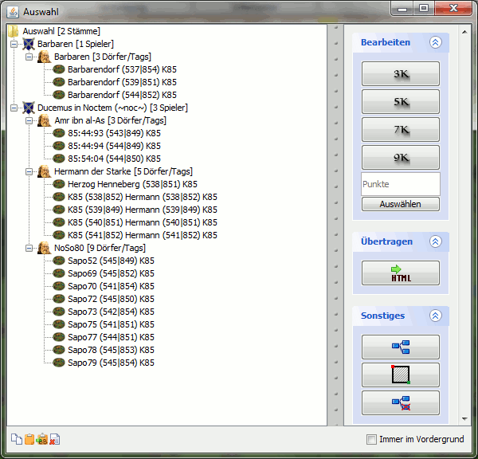

| |
Auswahlübersicht |
| |
|  |
| |
In der Auswahlübersicht werden gewählte Dörfer, Spieler und Stämme gezeigt, die über das Auswahlwerkzeug gewählt wurden. Von hier aus kann die Auswahl auf verschiedene Arten weiterverwendet werden, z.B. indem man Dörfer als BB-Codes exportiert oder sie in den Angriffsplaner überträgt. Das Menü auf der rechten Seite bietet die folgenden Funktionen:
- Bearbeiten
- 3K: Wählt alle Dörfer aus, die weniger als 3000 Punkte haben.
- 5K: Wählt alle Dörfer aus, die weniger als 5000 Punkte haben.
- 7K: Wählt alle Dörfer aus, die weniger als 7000 Punkte haben.
- 9K: Wählt alle Dörfer aus, die weniger als 9000 Punkte haben.
- Filtern nach beliebiger Punktzahl
- Übertragen
- Übertragen in HTML Datei: Überträgt den/die gewählten Dörfer in eine HTML Datei, worin alle exportierten Stämme, Spieler und Dörfer in einer ausführlichen Baumstruktur aufgelistet sind.
- Sonstiges
- Umschalten zwischen Baumstruktur und Liste: Schaltet die Ansicht der gewählten Dörfer zwischen der Baumansicht, inkl. der Stämme und Spieler, oder der Listenansicht um, in der nur die Dörfer gelistet werden.
- Bereichsauswahl: Erlaubt es, einen Bereich auf der Karte ausgehend von einer Start- und einer Endkoordinate auszuwählen und als Auswahl zu verwenden.
- Differenz: Klickt man diesen Button, so sucht DS Workbench in der Zwischenablage nach Dorfkoordinaten und zieht diese Dörfer von der aktuellen Auswahl ab.
|
| |
Shortcut-Funktionen |
|
|
- Einfügen von Dörfern per STRG+V: Um eine Dorfauswahl in die Auswahlübersicht zu bekommen existiert, neben den oben erwähnten Möglichkeiten, noch eine weitere Variante. Drückt man STRG+V sucht DS Workbench in der Zwischenablage nach Dorfkoodinaten. Findet es welche, so werden sie der Auswahl hinzugefügt.
- Kopieren von Dörfern per STRG+C: Erlaubt es alle Dörfer hinter markierten Einträgen per STRG+C in die Zwischenablage zu kopieren. Ist ein Spieler gewählt, so werden alle Dörfer dieses Spielers die in der Auswahlübersicht sind in die Zwischenablage kopiert. Ist ein Stamm markiert, so werden die Dörfer aller gewählten Spieler dieses Stammes kopiert. Wählt man das oberste Element "Auswahl", so werden alle Dörfer in der Auswahlübersicht kopiert. Kopierte Dörfer können dann per STRG+V z.B. in den Angriffsplaner oder Notizen eingefügt werden.
- BB-Code kopieren per STRG+B: Verhält sich wie das Kopieren per STRG+C, nur dass die Dörfer als BB-Codes in die Zwischenablage kopiert werden.
- Löschen per ENTF: Drückt man ENTF, so werden alle markierten Einträge gelöscht.
|
|
|